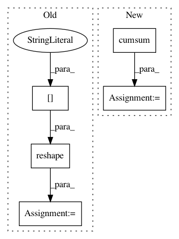

b939c910d036d8197ac7c63e5f188bc4c4fc4803,foolbox/batching.py,,run_parallel,#Any#Any#Any#Any#Any#Any#Any#Any#,94
Before Change
// get original shape (//attacks, batch size)
batch_shape = batched_predictions_args[0].shape
// merge individual batches into one super-batch
batched_predictions_args[0] = batched_predictions_args[0].reshape(
-1, *batch_shape[2:])
batched_predictions = model.forward(*batched_predictions_args)
// split super-batch back into individual batches
batched_predictions = batched_predictions.reshape(
After Change
// merge individual batches into one larger super-batch
batch_lengths = [len(x) for x in inputs]
batch_splits = np.cumsum(batch_lengths)
inputs = np.concatenate([x for x in inputs])
// split super-batch back into individual batches
batched_predictions = model.forward(inputs)
batched_predictions = np.split(batched_predictions, batch_splits,
axis=0)
else:
batched_predictions = []
In pattern: SUPERPATTERN
Frequency: 3
Non-data size: 5
Instances
Project Name: bethgelab/foolbox
Commit Name: b939c910d036d8197ac7c63e5f188bc4c4fc4803
Time: 2019-07-20
Author: rzrolandzimmermann@gmail.com
File Name: foolbox/batching.py
Class Name:
Method Name: run_parallel
Project Name: neurodsp-tools/neurodsp
Commit Name: f61f339dbc1782f7c5cd6cee6e3a5cd4758622bb
Time: 2019-10-09
Author: tdonoghue@ucsd.edu
File Name: neurodsp/aperiodic/dfa.py
Class Name:
Method Name: compute_rescaled_range
Project Name: neurodsp-tools/neurodsp
Commit Name: f61f339dbc1782f7c5cd6cee6e3a5cd4758622bb
Time: 2019-10-09
Author: tdonoghue@ucsd.edu
File Name: neurodsp/aperiodic/dfa.py
Class Name:
Method Name: compute_detrended_fluctuation